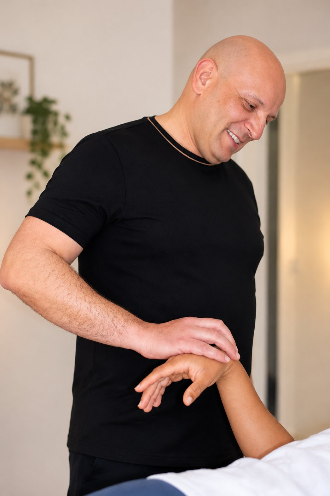
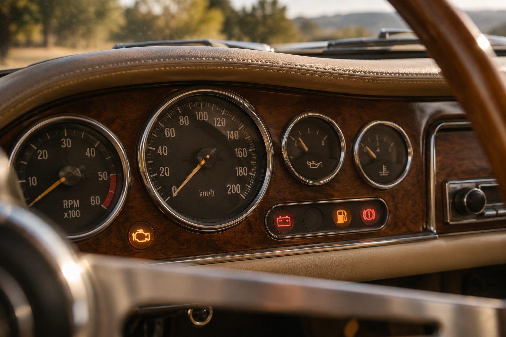
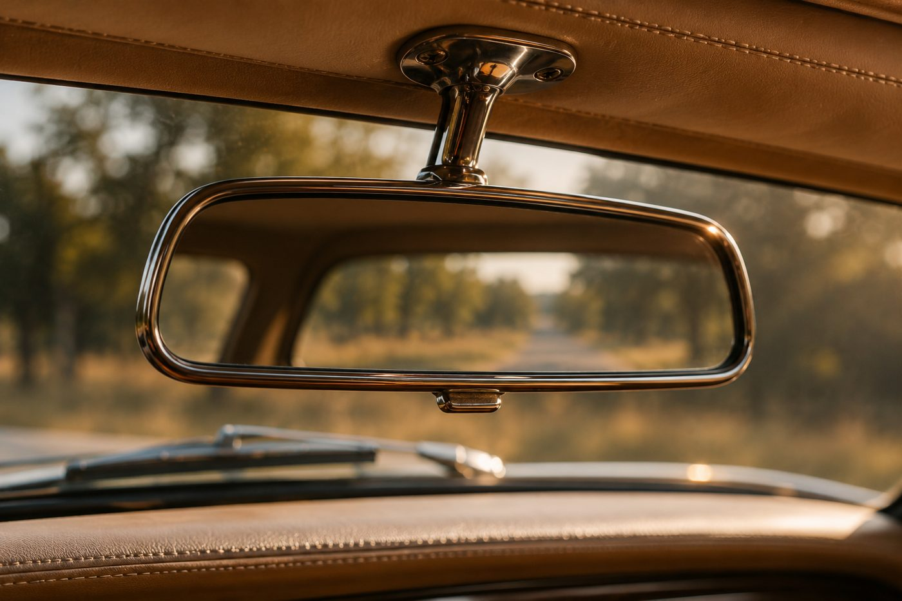
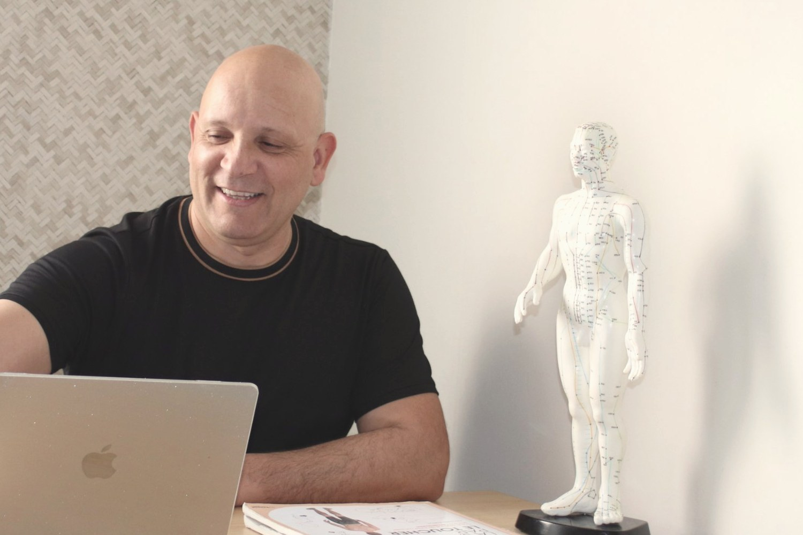

La kinésiologie, c'est quoi exactement ?
Et si votre corps avait aussi sa place dans la conversation ?
Quand quelque chose nous préoccupe, nous avons souvent le réflexe de chercher à comprendre avec notre tête. Nous réfléchissons, nous analysons, nous essayons de trouver une solution.
Et pourtant, il arrive que nous comprenions très bien une situation sans réussir à la vivre autrement.
Vous savez que vous n'avez pas besoin de tout contrôler, mais vous continuez à le faire. Vous aimeriez prendre du recul, mais une situation vous fait réagir plus fortement que vous ne l'auriez voulu. Vous savez ce que vous voudriez changer, sans toujours savoir par où commencer.
C'est là que la kinésiologie peut vous proposer une autre façon d'aborder les choses, en accordant une place à votre ressenti, à votre corps et à ce que vous vivez.
Imaginez un tableau de bord

Quand vous conduisez, plusieurs voyants peuvent s'allumer. Ils attirent votre attention, mais ils ne vous racontent pas toute l'histoire. Un voyant ne suffit pas à savoir précisément ce qui se passe sous le capot.
Il vous invite à vous arrêter, à regarder et à chercher ce qui mérite votre attention.
Nous pouvons parfois fonctionner de la même manière. Une tension, une émotion, une réaction ou une difficulté qui revient peuvent nous inviter à nous poser des questions.
Sans leur attribuer automatiquement une signification, nous pouvons prendre le temps de comprendre ce que nous vivons.
La kinésiologie propose une démarche qui associe un échange avec le praticien et un travail corporel, notamment à l'aide du test musculaire. Selon la situation, elle peut servir de support à une exploration personnelle.
Et si nous regardions aussi ce qui se passe derrière la réaction ?
Imaginez que vous portiez un sac à dos depuis longtemps.
Au fil des années, vous y avez rangé des expériences, des habitudes, des façons de faire face aux difficultés. Certaines vous sont encore utiles. D'autres vous demandent peut-être beaucoup d'énergie.
Vous avez appris à avancer avec ce sac, au point de ne plus toujours sentir son poids.
Je ne vais ni vider le sac à votre place, ni décider ce que vous devez garder ou abandonner. Nous pouvons prendre un moment pour l'ouvrir, regarder ce qu'il contient et voir ce qui vous serait utile aujourd'hui.
C'est une image de la façon dont j'aime envisager l'accompagnement : prendre le temps de regarder ce qui se passe, sans jugement et sans chercher à tout expliquer à tout prix.


Quel est mon rôle dans tout cela ?
Je ne suis pas là pour vous dire ce que votre corps voudrait vous révéler, ni pour interpréter chaque sensation comme si elle cachait nécessairement une réponse.
Je suis là pour vous écouter, vous accompagner dans cette exploration et vous aider à faire des liens lorsque cela vous paraît pertinent.
Nous partons de votre demande, de ce que vous vivez et de ce que vous souhaitez faire évoluer.
Vous restez libre de ce qui vous parle, de ce que vous retenez et de ce que vous souhaitez mettre en mouvement.
Car une même difficulté peut avoir des significations différentes selon les personnes. Il n'existe pas de mode d'emploi universel pour comprendre un être humain.
Concrètement, comment se passe une séance ?
Nous commençons par prendre le temps d'échanger. Qu'est-ce qui vous amène ? Qu'est-ce qui vous préoccupe aujourd'hui ? Qu'aimeriez-vous voir évoluer ?
Nous définissons ensemble un objectif de travail adapté à votre demande.
Le test musculaire peut ensuite être utilisé comme un outil de la pratique. Il consiste à exercer une pression légère sur un muscle, généralement au niveau du bras, pour observer sa réponse dans des conditions définies.
Cette réponse ne permet pas, à elle seule, de déterminer la cause d'un problème, de diagnostiquer un trouble ou de prouver qu'une émotion particulière est à l'origine d'une difficulté.

La kinésiologie est une pratique d'accompagnement et ne remplace pas un diagnostic, un traitement ou un suivi médical ou psychologique. Le test musculaire ne constitue pas un outil de diagnostic médical. En cas de symptômes persistants ou préoccupants, il est important de consulter un professionnel de santé.
Et si nous commencions par là où vous en êtes ?
Un premier échange pour clarifier votre demande et voir si mon accompagnement correspond à vos besoins.